summary(cars) speed dist
Min. : 4.0 Min. : 2.00
1st Qu.:12.0 1st Qu.: 26.00
Median :15.0 Median : 36.00
Mean :15.4 Mean : 42.98
3rd Qu.:19.0 3rd Qu.: 56.00
Max. :25.0 Max. :120.00 According to the Quarto Website, Quarto is an open-source scientific and technical publishing system. It comes bundled with recent versions of RStudio (2022.07 or later), so it’s already available on your machines.
Quarto is part of a broader ecosystem of tools that support reproducible research. Platforms like GitHub, Jupyter, Docker, ArXiv, and bioRxiv can facilitate reproducibility in various ways. In this module, we won’t explore the paradigm of reproducible research in detail. Instead, we’ll focus on how to use Quarto to make your analyses and reports more appealing, interactive, and efficient.
In this lesson, we’ll weave code and narrative into professionally rendered Quarto documents and use GitHub to safely store, share, and administer our results.
Before creating your first Quarto document, we need to set up your GitHub environment.
Originally designed for software development, GitHub is also a powerful tool for managing changes in documents and data projects. Its version control system helps track edits, collaborate with others, and maintain a clear history of your work.
Even if you’re working solo, GitHub offers valuable features like change tracking, documentation, and easy sharing.
To set up your personal GitHub environment, follow these steps:
git. On Windows: C:\Program Files\Git\bin\git.exe. On macOS/Linux, the path is usually set automatically (e.g., /usr/bin/git or /opt/homebrew/bin/git if installed via Homebrew). After setting the path, restart RStudio.main. Create an additional branch called dev off the main. Follow the instructions in the Hello-World Tutorial for guidance.For technical issues, please consult the discussion forum.
Before making your first commit, configure Git with your name and email. These values are stored locally and will be attached to each commit you make.
In the Terminal tab of RStudio, run:
git config --global user.name "Jane Doe"
git config --global user.email "jane.doe@example.com"To verify:
git config --global --listThis setup is independent of how you authenticate with GitHub (via token or SSH key).
Since 2021, GitHub no longer supports password-based authentication. You must choose one of the following secure methods:
repo permission, set an expiry date, and copy the token.This method is straightforward and works reliably across most environments.
Generate a key:
ssh-keygen -t ed25519 -C "you@example.com"Press Enter to accept the defaults.
Copy the contents of ~/.ssh/id_ed25519.pub and add it to GitHub under:
Settings > SSH & GPG keys > New SSH key
SSH is well-suited for automation and scripting workflows.
On Windows, GCM is bundled with Git.
On macOS, install via:
brew install --cask git-credential-managerThe first push will open a browser window for login. GCM stores your credentials securely in your system keychain and handles token rotation automatically.
To view or clear saved credentials in RStudio:
Tools > Global Options > Git/SVN > Credentials
On Windows, credentials are stored in the Credential Manager.
On macOS, they’re stored in Keychain Access.
If you cloned a repository using HTTPS but later want to switch to SSH:
git remote set-url origin git@github.com:<USER>/<REPO>.gitTo switch back to HTTPS:
git remote set-url origin https://github.com/<USER>/<REPO>.git| Issue | Solution |
|---|---|
Authentication failed after token paste |
Token expired or missing repo scope. Generate a new fine-grained PAT. |
| Prompted for credentials on every push/pull | Enable credential caching: git config --global credential.helper manager-core |
Permission denied (publickey) with SSH |
Run ssh -T git@github.com to test. Add key to agent: ssh-add ~/.ssh/id_ed25519. |
| RStudio ignores saved credentials | Upgrade to RStudio ≥ 2023.12. Older versions may not use system keychains correctly. |
For platform-specific instructions on credential caching and authentication, refer to GitHub’s official documentation.
Cloning a repository means copying its contents including version history from GitHub to your local machine. This allows you to work on the project in RStudio while maintaining version control.
To clone your repository:
In RStudio, navigate to:
File > New Project > Version Control > Git
Use the HTTPS or SSH link from your GitHub repository (found under the green “Code” button), depending on your chosen authentication method.
Select a local directory for the clone and click Create Project.
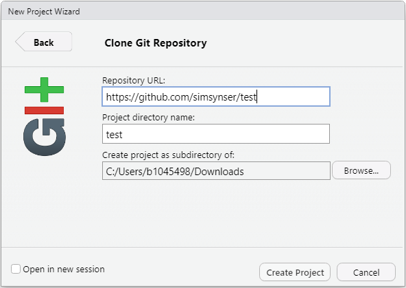
After cloning, the repository’s contents will appear in the Files pane, and a new Git tab will be visible in the RStudio interface.
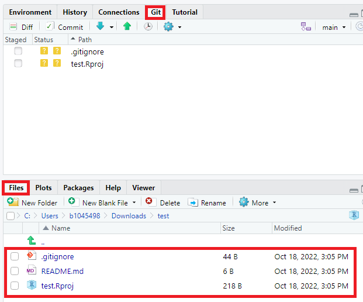
By default, the repository includes:
.gitignore: Specifies intentionally untracked files to ignore..Rproj): Contains metadata for the RStudio project..md): A markdown file with information about the repository.The gitignore and .Rproj files are created locally when initializing the project in RStudio. These may not yet exist on GitHub, depending on how the repository was originally set up.
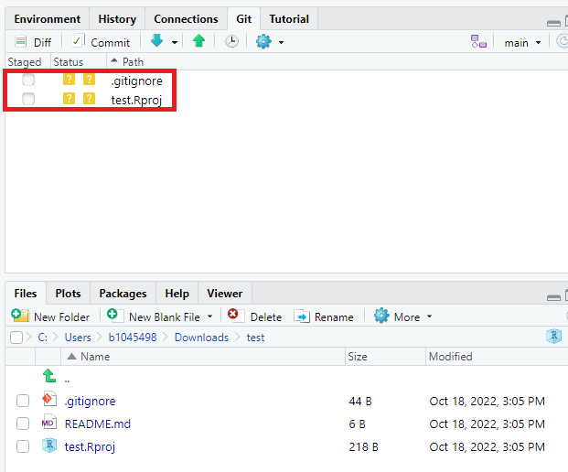
Before making further changes, switch to the dev branch:
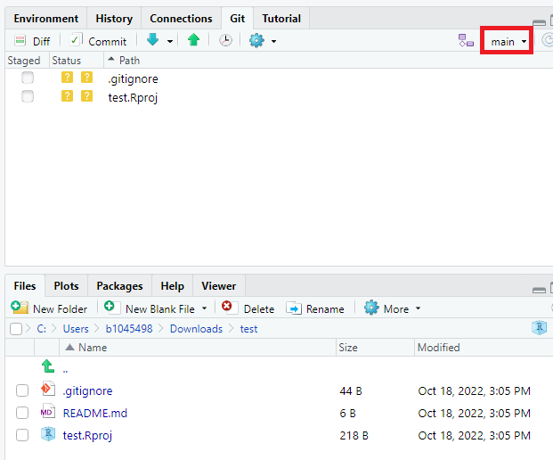
At this point, the dev branch mirrors the main branch.
It is recommended to work on a separate development branch (e.g., dev) and reserve the main branch for stable versions. Changes can later be merged into main via a pull request. See Opening a Pull Request for details.
Now that the environment is set up, let’s create our first Quarto document.
In RStudio: Navigate to (File > New File > Quarto Document). Enter a title for your document, accept the default settings, click “OK”, and save the file. You’ll receive a sample Quarto file with the extension .qmd.
By default, Quarto is in Visual Editing mode, which provides a WYSIWYM-style editing interface for Quarto documents. To switch to the Source Editor:
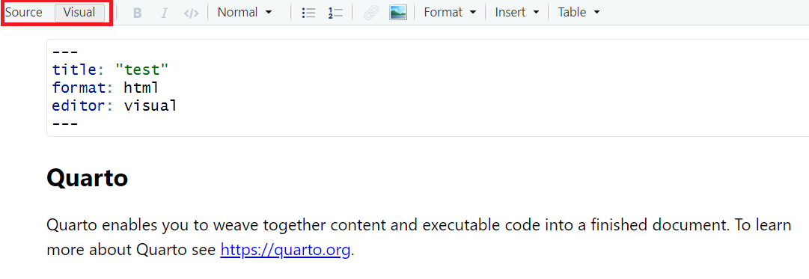
While the Visual Editor is intuitive and beginner-friendly, the Source Editor offers greater control and transparency. It also makes debugging and version control easier.
Quarto supports two editing modes:
| Mode | Best suited for | How to switch |
|---|---|---|
| Visual (WYSIWYM) | Quick drafting, beginners, content-first writing | Click “Visual” |
| Source | Precise Markdown control, debugging chunk options, version-control diffs | Click “Source” |
Recommendation: Start in Visual mode if you’re new to Markdown. Switch to Source mode when you need fine-grained control or are preparing code for review or collaboration.
Quarto documents consist of three core components: metadata, text, and code.
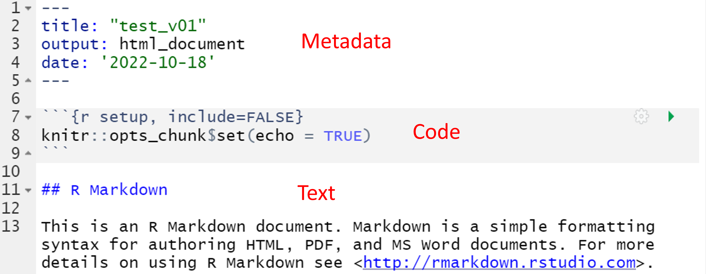
The metadata section is written in YAML and defines properties such as the document title, output format, and creation date.
Explore YAML syntax and document properties here.
Add a parameter to the metadata section of your Quarto document to include today’s date in the header. Then click Render in RStudio to generate the HTML output.
---
title: "test"
format: html
editor: visual
date: today
---
You can also change the output format using the format parameter. Quarto supports a wide range of formats including HTML, PDF, Word, ePub, Jupyter, and more. See the full list here.
Alternatively, YAML-configurations may be specified on a project level (separate file named _quarto.yml) or on a code chunk level (see YAML Locations).
Code blocks in Quarto begin and end with three backticks. To specify an R code block, use {r} after the opening backticks:
summary(cars) speed dist
Min. : 4.0 Min. : 2.00
1st Qu.:12.0 1st Qu.: 26.00
Median :15.0 Median : 36.00
Mean :15.4 Mean : 42.98
3rd Qu.:19.0 3rd Qu.: 56.00
Max. :25.0 Max. :120.00 Quarto supports multiple languages including R, Python, Julia, and Observable JS.
You can control how code behaves using execution options. For example:
#| echo: false hides the code but still runs it.#| eval: false shows the code but does not execute it.These options are useful for teaching, documentation, or drafts. A full list is available here.
Insert the following code into your Quarto document. Add explanatory text below the chart and render the document as HTML:
library(ggplot2)
ggplot(data=cars, aes(x=speed, y=dist)) +
geom_point() +
geom_smooth()This exercise demonstrates one of Quarto’s key strengths: the ability to combine narrative and code into a single, reproducible document that can be rendered in multiple formats.
When you click Render, Quarto runs a processing pipeline that converts your .qmd file into the final output document. This process involves three main steps:
knitr (for R) or Jupyter (for Python) executes the code chunks and generates an intermediate Markdown (.md) file. This file combines your code, output, and narrative text.
pandoc converts the Markdown file into the final output format—such as HTML, PDF, or Word—applying layout and styling.
The rendered document opens in the RStudio Viewer or your default browser.
.qmd --> knitr(r)/jupyter(py) (code runs) --> .md --> pandoc --> HTML | PDF | Word
▲ ▲
executes R/Python LaTeX, styling, layoutYou can specify the desired output format in the document’s YAML front matter or in a project-level _quarto.yml configuration file.
Understanding this pipeline is useful for debugging. It helps you identify whether an issue originates from code execution, Markdown conversion, or final rendering.
For more details, see the Quarto Documentation.
Regular synchronization between your local project and the online repository is essential for version control. Begin by pulling any updates from GitHub.
In RStudio’s Git tab, click the Pull button:
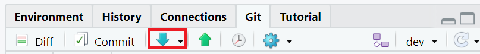
Even when working alone, it’s good practice to start each session with a pull to ensure your local copy is up to date.
Next, commit your changes. A commit is a snapshot of your progress, accompanied by a descriptive message.
Select the files to include, write a meaningful commit message, and click Commit.
Alternatively, you can use the terminal:
git add -A
git commit -m "test"See Figure 11.8.
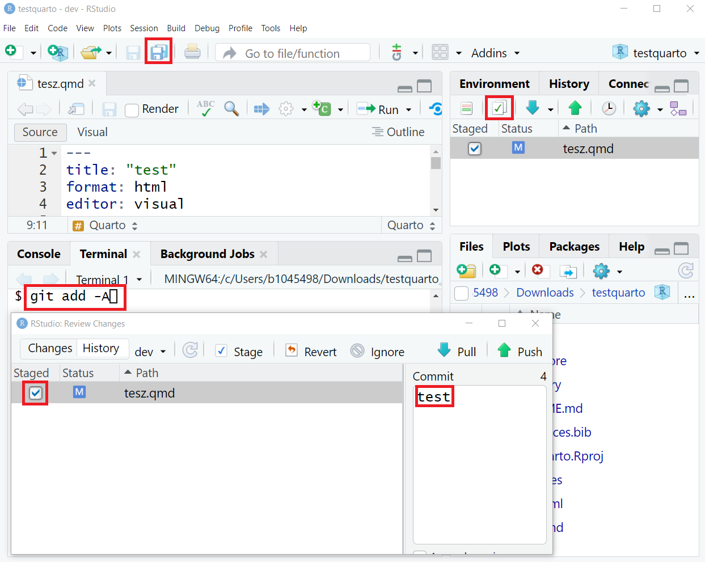
Finally, push your committed changes to GitHub:
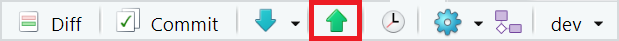
Your online repository should now reflect the latest changes. Make sure you’re viewing the correct branch (e.g., dev) on GitHub.
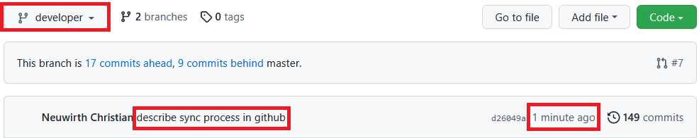
In this example, the dev branch is two commits ahead of main. To share your updates or integrate them into the stable version, open a pull request to merge dev into main.
Quarto uses Markdown, a lightweight markup language, to format text. Markdown relies on plain-text symbols to control layout and styling.
**Text** → Text*Text* → Text# to define heading levels:# Heading level 1
## Heading level 2
### Heading level 3Tables are created using pipes | and dashes -. For example, the numeric operators table in the first lesson was written in Markdown. Figure Figure 11.11 shows how such a table is constructed.
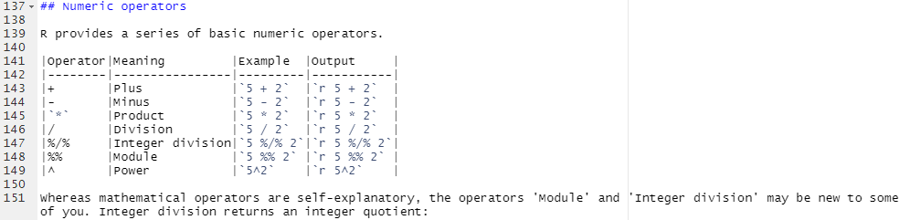
Ordered lists use numbers followed by a period:
Code - Ordered List:
1. item 1
1. item 2
1. Item 3
+ Item 3a
+ Item 3bWill result in:
To create an unordered list, use *, -, or +:
Code - Unordered List:
* item 1
* item 2
* Item 3.1
- Item 3.2Which will result in:
Use Text to create links. For example:
[GitHub](https://github.com/){target="_blank"}This renders as: GitHub. The target="_blank" parameter opens the link in a new tab, which is a good practice when linking to external websites.
The target="_blank" attribute opens the link in a new tab, which is recommended for external sites.
Use > for blockquotes. Nesting is possible with multiple >:
>"Everything is related to everything else, but near things are more related than distant things".
>
>>The phenomenon external to an area of interest affects what goes on inside.Will result in:
The first law of geography is: “Everything is related to everything else, but near things are more related than distant things”
The phenomenon external to an area of interest affects what goes on inside.
Some characters have special meaning in Markdown (e.g., #, *, >, $). To display them literally, prefix with a backslash (\):
\# → #\* → *Quarto supports LaTeX-style math using dollar signs:
Math. notation example 1:
$x = y$
Result looks like:
x = y
Math. notation example 2:
$\frac{\partial f}{\partial x}$
Result looks like:
\frac{\partial f}{\partial x}
See “Mathematics in R Markdown” as well as Markdown Basics for more.
Quarto supports citation management and automatic bibliography generation using a .bib file, which stores reference metadata in BibTeX format.
.bib FileCreate a plain-text file using any editor (e.g., Notepad, VS Code, or RStudio) and save it with a .bib extension (e.g., references.bib) in your project folder.
To export references from Google Scholar, enable BibTeX export in your settings:
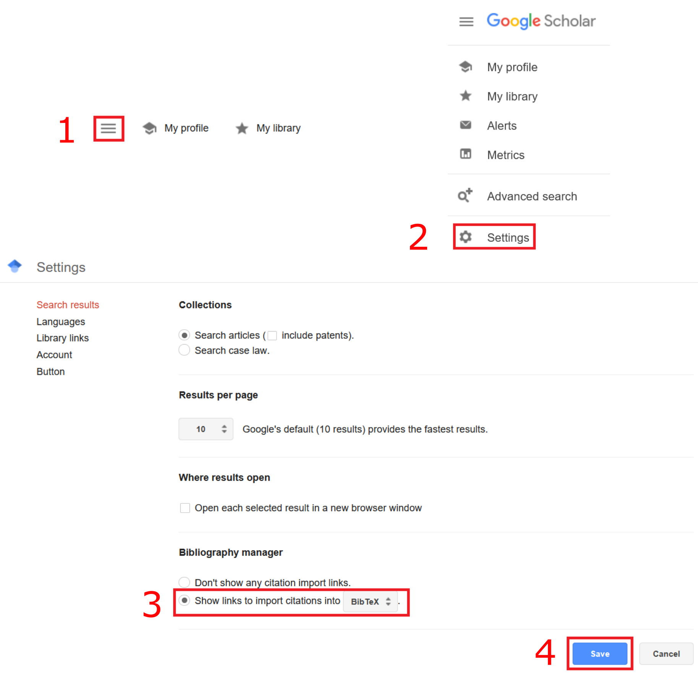
Browser interfaces may vary. Refer to the course discussion forum if you encounter issues.
Once BibTeX export is enabled, a new link labeled “Import into BibTeX” will appear below each reference:
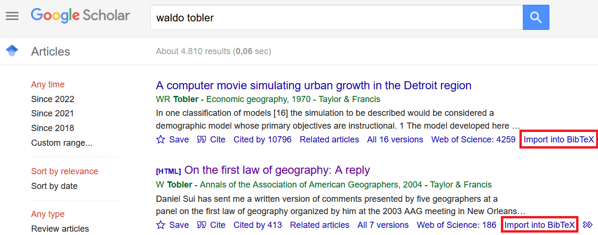
Click the link and copy the BibTeX entry into your .bib file.
To cite references in your Quarto document:
.bib file in the YAML metadata:bibliography: references.bib@<BibTeXKey> to insert citations in your text.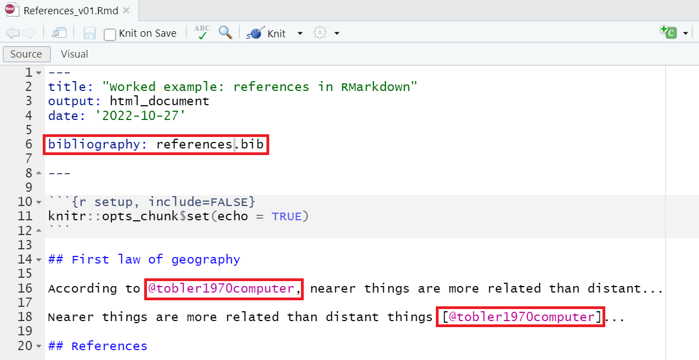
Render the document to HTML. Quarto will process citations and generate a bibliography automatically. Both inline (@key) and bracketed ([@key]) citation styles are supported.
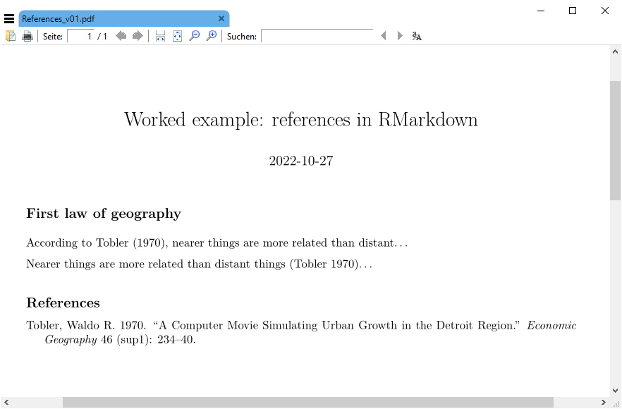
For a hands-on example, download this Quarto reference example, unzip the folder, and open the .Rproj file in RStudio.
Quarto’s core is intentionally lightweight, but it can be extended with community-built extensions for advanced customization, automation, and enhanced interactivity.
Running quarto add ... downloads the extension into an _extensions/ folder at the root of your project.
→ This folder should be committed to version control so collaborators share the same behavior.
During rendering, Pandoc automatically loads any Lua filters found in _extensions/.
These filters modify the document dynamically — for example, by injecting diagrams or styling callouts.
Why Lua? Pandoc’s native filter language is Lua. Lua filters run without external dependencies and offer high performance.
# Adds a custom callout filter. The Exercise boxes in this module use it.
quarto add coatless-quarto/custom-calloutA catalog of available extensions along with a short guide on writing your own is available in the Quarto Extension Gallery.
To activate filters, list them in your _quarto.yml file:
filters:
- webr
- custom-calloutAlways check the extension’s README for additional setup instructions.
Quarto can significantly streamline repetitive reporting tasks. For example, if a client requires daily updates on spatial economic indicators, you can automate the process using Quarto. Instead of manually generating reports, Quarto can compile updated data and visualizations each time the document is rendered.
For real-time data, Alpha Vantage provides financial market data via its Alpha Vantage Rest API. The R package alphavantager enables access to this API directly from R.
This allows you to retrieve real-time stock prices, FX rates, and technical indicators, and integrate them into Quarto reports for automated analysis and visualization.
The free Alpha Vantage tier is limited to 25 API requests per day.
Explore a practical example by downloading this draft finance data report. Unzip the folder and open the .Rproj file in RStudio.
The project includes:
.bib file with a BibTeX reference..csv file in the data folder, listing over 400 country names, national currencies, and currency codes..qmd file with inline R code that renders real-time currency exchange rates in a map.Review the .qmd file thoroughly before compiling an HTML output. Note that it includes an interactive Leaflet map, making HTML the only supported output format.
Try enhancing the report with an additional spatial indicator, such as a map displaying exchange rates from national currencies to the Euro.
Quarto’s capabilities extend far beyond what we’ve covered in this session. To explore more advanced features, consult the Quarto Guide.
Topics include:
To find inspiration for your own projects you may consult the Quarto Gallery, which showcases a wide range of real-world examples